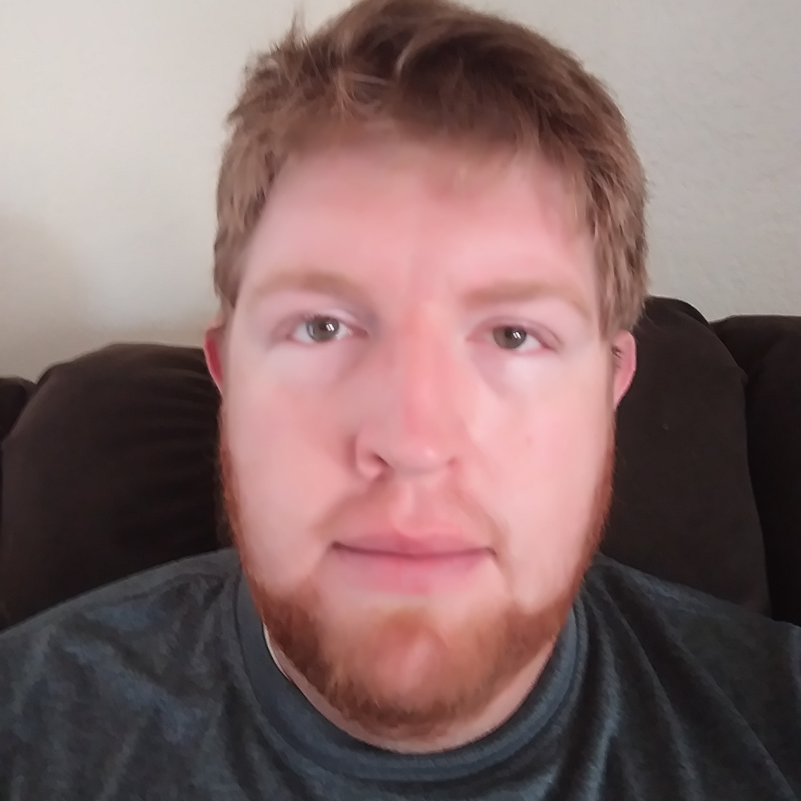

Chase Wilkins | WDD 130
Howdy Folks! I can't tell you just how excited and nervous I am about starting my Applied Technology degree. Here are a few facts about myself. I born and grew up in Arizona. I have lived all but two years of my life in Arizona. I'm not opposed to living anywhere else... just haven't needed to venture anywhere else to find what I need in life... except when the Lord asked me to serve those two years as a missionary. I served in the Little Rock Arkansas mission. That was an amazing experience but I have to say. the Best two years have been overshadowed by the Last 12 years of marriage to my amazing wife and the addition of 5 amazing kids along the way. They (years and kids) have not been easy and thus I have allowed some of my goals to slip away. I have been tossed to and fro in my work experiences but for the most part they have been centered in healthcare. A few years back an IT guy asked me if I would be interested in applying for an open position in his department. I was somewhat nervous about the opportunity as I had no real experience as a computer dude. He assured me that he and his coworker knew all they needed to know concerning the subject and would be willing to teach me... what they couldn't do was teach someone the clinical side of things so well. so I applied and haven't been disappointed in doing so. I love being able to help my fellow Clinical staff members how to better use the systems at their disposal and hearing their feedback n how to optimize it. I am a clinic Systems analyst and I love it, but have recently felt the need to increase my learning so that i can expand my skills and improve my output. Doesn't hurt your pay to have a degree either so... here I am and I am excited to learn with all of you!